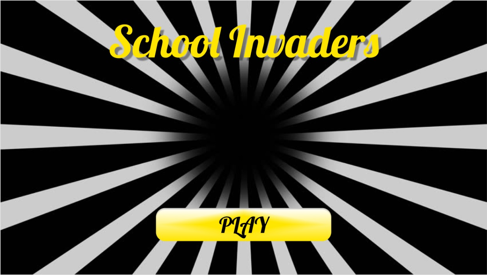
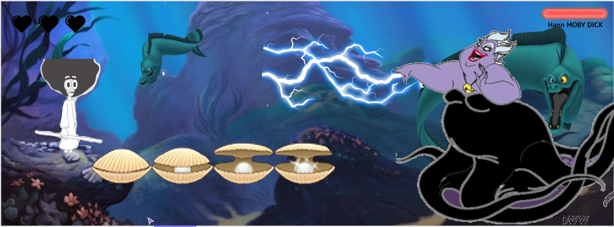

Mockups
Par Nelson, Romain et Ashan
 Les maquettes que vous voyez ci-dessus font partie de celles de notre idée initiale du projet. Comme vous le verrez dans la page suivante, nos idées ont évolué avec le temps et nous nous sommes dirigés vers un univers moins enfantin. Nous avons décidé de partir vers un jeu d'un autre style. En effet, nous voulions partir vers un monde plutôt médieval-faintaisiste avec un air de RPG. Ce qui est loin de ce qu'on peut apercevoir ci-dessus.
Le code source de l'application est disponible sur le github de notre projet.